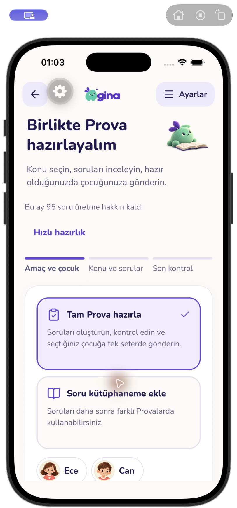
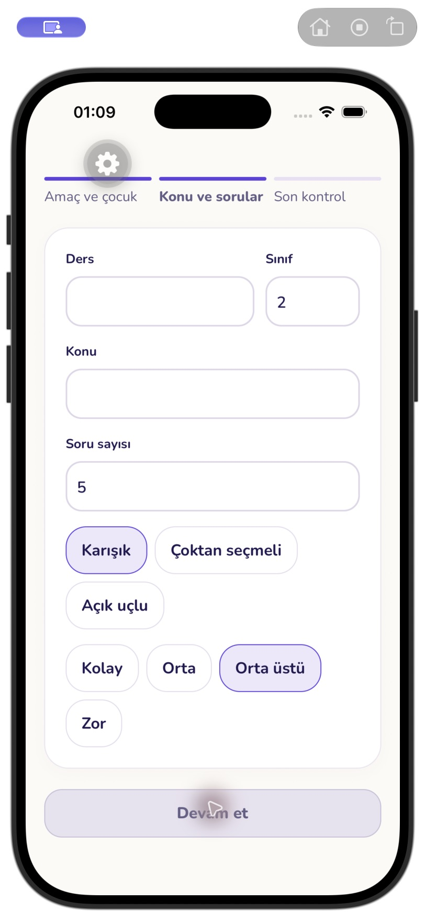
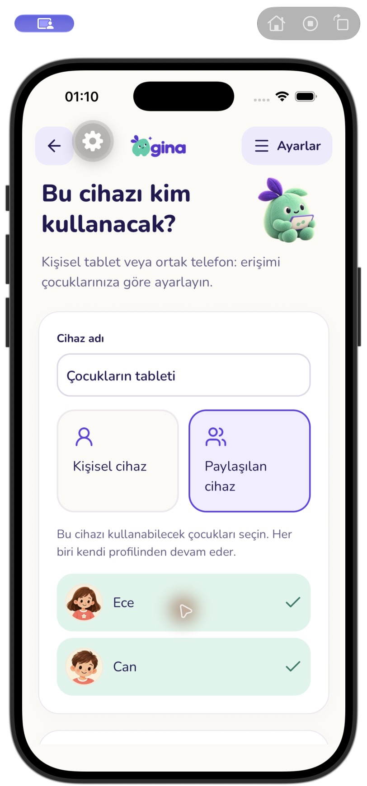
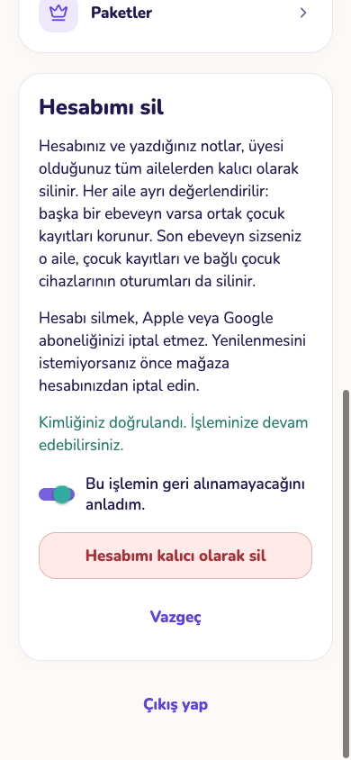

GINA · Aile deneyimi
Gerçek uygulamadan telefon ve tablet görünümü. Sunucu cevapları test verisiyle taklit edildi; gerçek aile kayıtları kullanılmadı. Apple/Google düğmeleri bu galeride sağlayıcı açıkmış gibi gösterilir. Canlı giriş ve AI doğrulaması henüz tamamlanmadı.
Katılmadan önce aileyi incele
AI ile tam Prova hazırlama
Soruları gözden geçir ve gönder
Yerel iPhone kontrolü
iPhone 17 Pro simülatörü; uygulamanın iOS görünümü. Deneme sunucusu kullanıldı. Bu görüntü TestFlight derlemesi değildir.



Şifresiz hesap doğrulaması
Deneme yanıtlarıyla doğrulandı; gerçek e-posta gönderilmedi veya hesap silinmedi.

Kontrol sonuçları